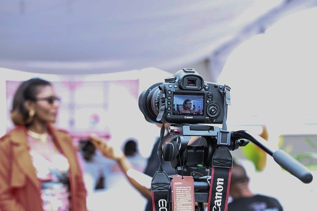
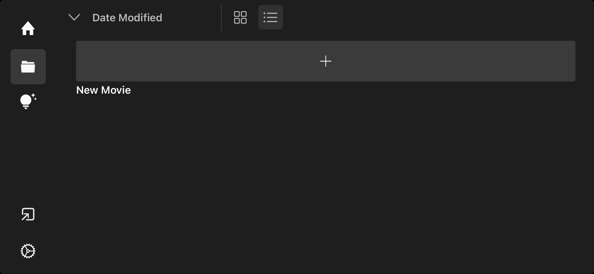
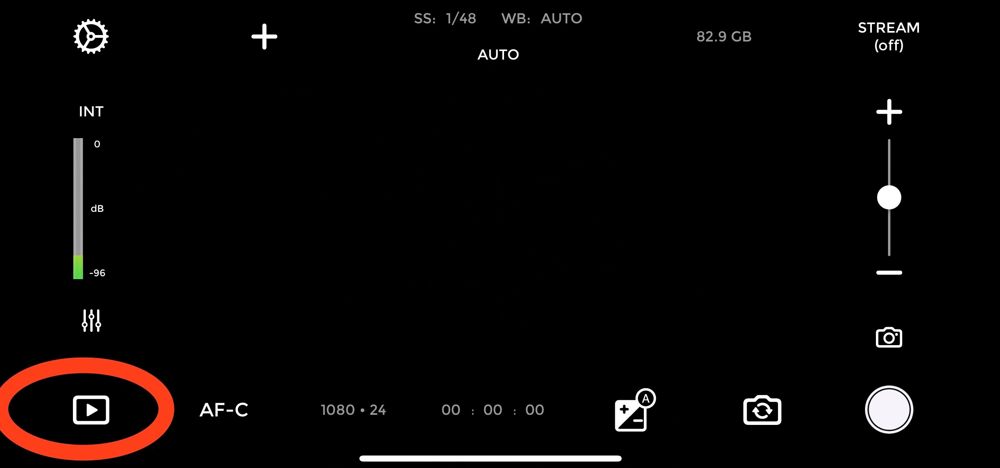
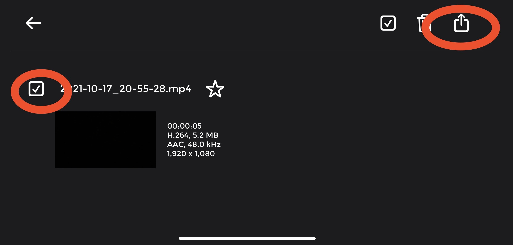
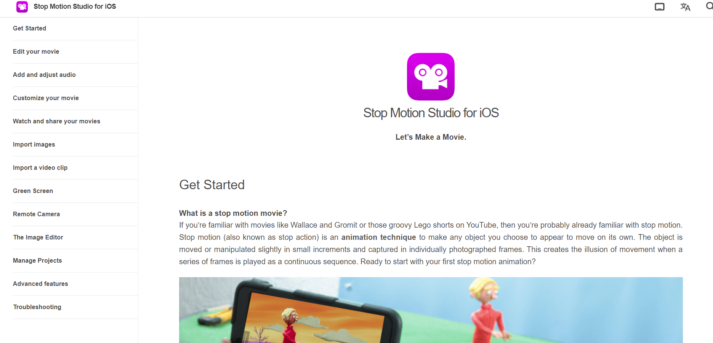

Information About Padcaster
Quick Links
What are Padcaster & Stop Motion Studio Pro?
The Padcaster Studio Kit is a set of audio-visual recording equipment. The equipment includes an iPad, tripod, monopod, microphone kit, teleprompter, angle lens, green screen, and more. This equipment is used to create a variety of videos from vlogs to films to instructional content. The Padcaster Producer app is used to record and add special effects to the video.

Stop Motion Studio Pro is a video and editing app that allows the user to create stop motion animation. Features include speed adjustment, special effects, image quality, sequencing, frames, and more.

How Do You Use Padcaster & Stop Motion Studio Pro?
Setting Up The Padcaster Equipment
Please note that instructions for assembly should be included with your Padcaster equipment. Be careful when you use the equipment because parts of it are fragile. Instructions can also be found with the provided video link.
- Find the tripod and open up the legs. There are three settings for the height and latches to lock them into place. The center column also adjusts up and down. The handle can be attached to the side.
- Insert iPad into the Padcaster iPad case.Be sure that the lens of the iPad is matched up to the opening for the lens on the Padcaster iPad case.
- Attach the Padcaster iPad case to the tripod/monopod.
- Choose the lens you would like to use and attach it to the Padcaster iPad case (if desired).
- Attach the microphone to the top of the Padcaster iPad case.
- Attach the light (if desired).
- If you did not attach a lens, you can attach the teleprompter (if desired).
Padcaster Producer App
The Padcaster Quick Start Guide can provide details about the effects, tools, and how to use the Padcaster Producer app. The Padcaster Producer app is best suited for taking images and creating the video clips. These will later be exported and uploaded into the Stop Motion Studio Pro app.
Follow these steps to export your video when it is finished.
- Click the icon in the bottom left corner.

- On the next screen, click on the video you want to export.
- Click the button in the top-left with a rectangle and arrow combined.

- Choose email or file sharing. Ask your teacher to know which option to choose.
Stop Motion Studio Pro App
After images and video clips have been created, the editing process takes place in the Stop Motion Studio Pro app. Find more Stop Motion Studio Pro information here.
Explore On Your Own
Stop Motion Studio Pro
- Open the Stop Motion Studio Pro app.
- Click the light bulb on the left side of the screen.
- Choose 2-3 video tutorials to complete. When trying to decide which tutorials to choose, reflect on the following questions:
- Which of these tutorials would be most helpful in creating your stop motion video?
- Are there other tutorials that would be helpful? Which ones?
- What other resources are available for assistance with editing your stop motion video?
- Visit the Stop Motion Studio iOS page for more Stop Motion Studio Pro information.
- Review 2-3 of the different tabs. Options include:
- Getting Started
- Edit your movie
- Add and adjust audio
- Customize your movie
- Watch and share your movies
- Import images
- Import video clips
